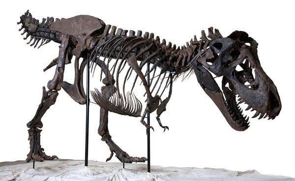
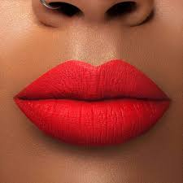
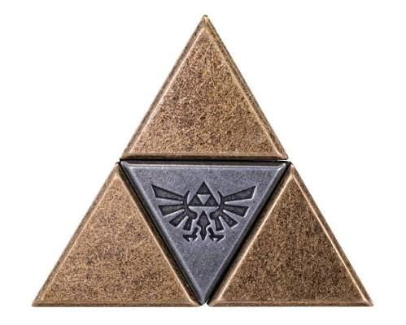

My Collection
This is my curated collection of things that I love. Each item here represents something meaningful to me, whether it's a favorite book, game, album, rock, mineral, tool, art, or memory. This collection showcases how responsive design allows me to adapt my content across all screen sizes.

Painting and Crafting
Hobby | 15 Years | Experimenting with different mediums
Crafting is my favorite hobby, I especially enjoy painting because I am able to find a place for my thoughts to land. I enjoy using watercolor and acrylic paints, and I have been painting for about 10 years. I don't always like how my paintings turn out, but I enjoy the process of creating them. Using polymer clay, I also make earrings. I enjoy making earrings because I can create something that is both functional and beautiful.

Exploring fossils in museums and stateparks
Hobby | 20 Years | Adventure/Discovery
Fossils and dinosaurs have always fascinated me. I enjoy visiting museums and state parks to learn more about the ancient past. Every city I visit I always go to their museum. I recently renewed my membership at the Houston Museum of Natural Science, and I am excited to explore their new exhibits. I've seen dinosaur footprints in the Dinosaur Valley State Park in Glen Rose, Texas and I hope to see more in the future.

Hobby | 20 Years | Makeup
Lipstick
Lipstick Collecting
Lipstick is more than just makeup to me. It's a form of self-expression and creativity. The quality, packaging, and variety of shades are something that I look for. I don't buy the most expensive ones, but I do enjoy trying out different brands and formulas. I also enjoy the history and culture behind lipstick. I enjoy watching videos of people trying out hard to find vintage lipsticks.

S'mores
My favorite dessert!
S'mores are my favorite dessert. I love the combination of chocolate, marshmallow, and graham crackers. I enjoy making them over a campfire and sharing the experience with friends and family. The textures are perfect, the gooey marshmallow, the melted chocolate, and the crunchy graham cracker. Fall is my favorite time of the year, which means definitely S'more season!

Hiking
Walking at state parks!
Walking through state parks is a great stress reliever for me. I enjoy being in nature and taking in the sights. Fresh air and exercise are good for my mental health. I also enjoy taking pictures of the scenery and wildlife. My two dogs go with me and enjoy the activity as well. The trails are usually well maintained and I collect items from the giftstores.

Zelda
My favorite video game!
The Legend of Zelda is my favorite video game series. I enjoy the adventure, puzzles, and exploration that the games offer. The music and art style are also a big part of what makes the games so enjoyable. I have been playing Zelda games for many years and I look forward to each new release. I also enjoy collecting Zelda merchandise and memorabilia.